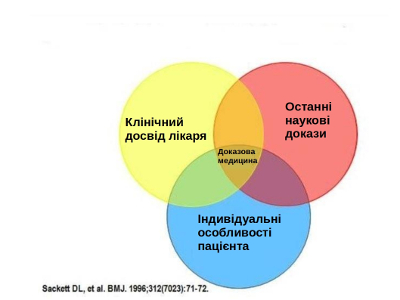
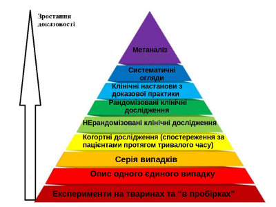

Доказова медицина для чайників – що нам з того?
Photo by Martin Brosy on Unsplash
Доказова медицина, вже судячи з самої назви, передбачає наявність якихось доказів . А саме – доказів своєї ефективності. ++Це – справедливий принцип по відношенню як до життя та здоров'я пацієнта, так і до його гаманця++.
Чи хочемо ми, щоб нам призначали ліки просто на основі гарної розповіді на якійсь фармацевтичній конференції, красивої реклами чи сумнівних результатів, отриманих кимось на 6 щурах?
Як саме витрачати гроші і час – то завжди наш вибір, і добре коли того часу і грошей вдосталь. Але часто зволікання та лікування фуфломіцином (от же ж всім сподобалося те слово!) може призвести до погіршення стану здоров'я – навіть настільки, що час може закінчитися надто зарано.
Отже:
Звідки беруться оті лікарські засоби та практики із доказаною ефективністю?
Ваш лікар приймає рішення про які-небуть рекомендації на основі його клінічного досвіду , останніх доказів медицини та індивідуальних особливостей пацієнта. Це – "свята трійця" доказової медицини. 
З досвідом та індивідуальними особливостями все більш-менш зрозуміло.
А що ж таке доказ?
Інтуїтивно ми ж, мабуть, розуміємо, різницю між "мені подобається цей препарат" і "ефективність цього препарату була доведена на тисячах пацієнтів, про що написано у ось цій науковій публікації"?
Доказ – це завжди грунтовна аргументація та звернення до конкретних авторитетних наукових джерел!
У той же час, докази бувають різні та залежать від ступеню вивченості окремих клінічних ситуацій. Це можна відносно просто зрозуміти на прикладі нижче наведеної піраміди. Кожен поверх – це окремий тип досліджень зі своїм дизайном та методами аналізу даних. Якість цих доказів зростає в напрямку вершини.
Чим вище поверх – тим менше інформації можна знайти, але її цінність вища! Такий процес можна порівняти з фільтрацією зайвого.

Як і хто створює ці докази?
За цими дослідженнями – тисячі науковців, медиків, медичних і наукових установ, а також пацієнти, ресурси та кошти, виділені на розвиток науки і медицини провідними світовими державами та фондами. Наразі це впевнений, стабільний процес поступового вивчення найдрібніших особливостей людського тіла та свідомості.
Медична наука вже не перевертається з ніг на голову з кожним гучним відкриттям. Час переворотів сплинув зі своїми героями та лиходіями. Однак відголоски того часу все ще можна зустріти в деяких змі, які до цього часу, на жаль, не гребують іноді заголовками "Вчені знайшли секрет вічного життя".
Що це значить для нас, як для пацієнтів?
При виборі свого лікаря, важливим критерієм є його активна позиція з приводу доказової медицини – це позначиться на ефективності лікування та істотно зекономить Ваші кошти;
А ще - справді, ніхто не може у нас відібрати віру у пресвятий траумель чи святу воду – і для заспокоєння душі (якщо вона зовсім така неспокійна), ніхто не заборонить їх прикладати до хворого місця (і може навіть спрацює ефект плацебо, що, до речі, теж не завжди добре).
Але ми завжди повинні чітко усвідомлювати:
різницюміж засобами із доказаною ефективністю і без,
свою відповідальність за своє здоров'я та здоров'я своїх дітей при виборі таких засобів,
марність витрачання коштів на "чудодійні засоби", ефективність та безпечність яких ніяк не доказана.
Бажаємо Вам мати справу із висококваліфікованими лікарями, завжди знаходити з ними спільну мову, а також - якісну конструктивну інформацію!